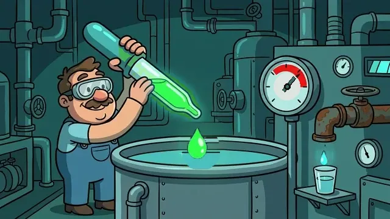
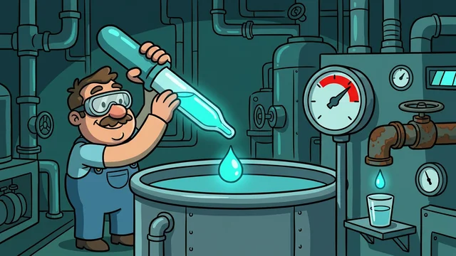
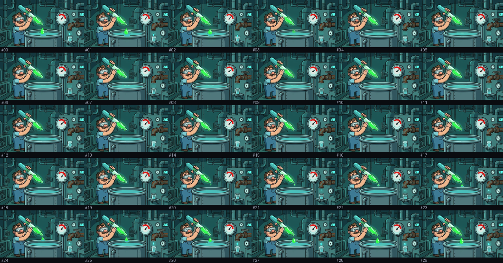

30 desenhos @ 5 fps. Clique/recarregue para rever; o loop fecha exato (QA Q1 = 0).

Todos os 30 quadros partem destes mesmos pixels. Consistência estrutural, não estatística.
| PASS | Q1_loop_closure | {'meanabsdiff': 0.0} |
| PASS | Q3_fundo_cobertura | {'cobertura': 18.27} |
| PASS | Q2_fundo_intacto | {'max_diff_fora_uniao': 2} |
| PASS | Q4_flicker | {'std': 0.25, 'means': [84.8, 84.8, 84.8, 84.5, 84.4, 84.5, 84.5, 84.6, 84.6, 84.6, 84.5, 84.4, 84.3, 84.3, 84.2, 84.1, 84.1, 84.1, 84.0, 84.0, 84.0, 84.1, 84.1, 84.2, 84.3, 84.5, 84.6, 84.7, 84.7, 84.7]} |
| PASS | Q5_step_delta | {'max': 0.68, 'mean': 0.2, 'deltas': [0.48, 0.39, 0.68, 0.31, 0.13, 0.11, 0.11, 0.04, 0.05, 0.12, 0.14, 0.11, 0.12, 0.09, 0.09, 0.05, 0.04, 0.05, 0.02, 0.05, 0.09, 0.11, 0.17, 0.26, 0.38, 0.4, 0.4, 0.32, 0.28, 0.43]} |
| PASS | Q6_entrega | {'n_frames': 30, 'step_ms': 200, 'loop': 0, 'bytes': 265356} |

| 00 | k00–02 · gota de veneno no ponto do poster, cai no líquido |
| 01 | k03–04 · gota afunda e se mistura (squash + fade) + anéis |
| 02 | k05–19 · brilho da superfície reage; ponteiro coiceia e volta |
| 03 | k20–29 · gota se forma no bico da pipeta e desce até o poster |
| 04 | torneira: gotinha de água cai no copinho 1× por ciclo + glint |